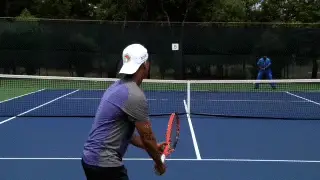
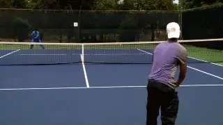
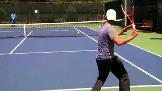

Rapid, Enduro, and Zig Zag:3 Conditioning Drill Games¶
Rob Heckelman

Rapid Tennis: conditioning by reducing recovery time rather than running sprints.
If you've played enough competitive tennis, you've experienced the times when your opponents have stalled their way through a match, or maybe you have stalled to catch a breath. But maybe doing sprints or other on-court conditioning drills isn't your thing.
So here are three ways to work on your conditioning and footwork in the context of the kind of drill games we've been presenting in this series. (Click Here to read more articles.)
Drill games not only keep things more interesting by adding a competitive element, they are also realistic because they are based on actual on court hitting of the tennis ball.
Rapid Tennis
In Rapid Tennis, neither player is allowed to take a rest between points or when changing sides. In fact, the goal is to hurry to the next point or game as quickly as possible.
The purpose is to challenge your conditioning. You and your opponent are required to run to pick up the balls and get in position playing the next point. And to run on the changeovers to the other side. Any hesitation will not be tolerated!
Both players must push themselves to play every point as soon as possible. This doesn't mean, however, hurrying the actual playing of the point, just everything in between.
This game will tell you quickly whether or not you are in condition to play a tough singles match. Try playing the best 3 out of 5 games or work up to a Rapid Tennis set!

Winning a long point isn't enough to win a point in Enduro.
Enduro
Enduro is an even tougher drill game to test and develop your endurance and stamina. The point can begin with either player putting the ball in play from the baseline or with each player serving five points in a row. Play is to six points.But the only way to score a point is by winning four points in a row. Therefore it can take an entire afternoon to finish the game.
If six points seems like to much to start, you are welcome to change the number of points in the game to 5 or 4 or even 3 to fit your needs. But don't get too crazy. The sun will set or the club will turn off the lights eventually.
Zig Zag
Many players find that their footwork deteriorates markedly when they are tired. I found this to be one of my own biggest problems in tournament matches.
Not only was I taking fewer steps and covering less ground, but my foot work began to get sloppy and my positioning on the ball was suffering. This often led to a poor stroke.
I kept telling myself, "Move your feet, move your feet." Maybe it's because the feet are the furthest point from the brain, but the message just wasn't getting there. I wanted to critique my footwork, but I found there wasn't any to critique.

Working hard on your positioning in Zig Zag will improvement your stamina, but also your footwork.
I needed a game that would address this, so I came up with the following game called "ZigZag."
There's no way for anyone to work on your footwork when you are tired unless a rally can be maintained. So, this game has two parts. The players have to complete a four-ball exchange with a specific pattern, and only then does the point start.
Both players start at the baseline with either player starting the point. One player hits cross-court while the other hits the ball back down the line. After the fourth hit-two cross-courts and two down the lines--the point begins.
After the fourth hit, a player can come to net, hit an aggressive groundstroke, or do whatever they wish to win the point. You will notice that if your footwork is sloppy, by the time that fifth hit comes around, it will be difficult to play the rest of the point with control.
Play to 21 points, or again, adjust the game down to 11 or 7 points and then work up. After ever game switch who is hitting crosscourt and down the line.
Zig Zag is also a great game for working on your shot accuracy. To make it even more difficult in this regard, you can increase the number of crosscourt and down the lines the players must hit before the point starts.
Rod Heckelman has been the general manager of the famed Mt. Tam Racquet Club in Marin County, California for the last 30 years. He was formerly the youngest head pro at the John Gardner Tennis Ranch in Scottsdale, Arizona, and has been ranked numerous times in Northern California seniors play. He is the author of a book on senior tennis, called “Playing Into the Sunset” as well as the “Business Handbook for Tennis Pros.” In addition to his reputation as an outstanding teacher and coach, Rod speaks widely within the tennis industry on all aspects of instruction and club management.